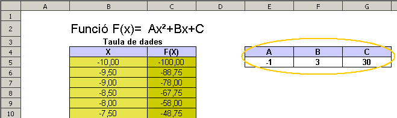
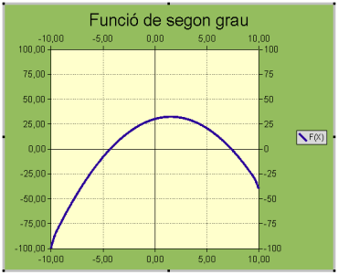
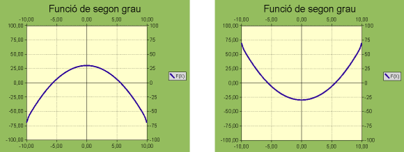
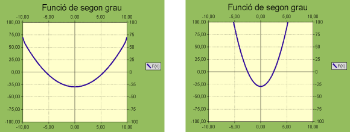
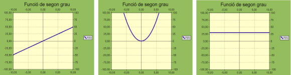

Obrir el fitxer M2 i afegir un nou full amb el nom de M2P5 Estudi gràfic de funcions matemàtiques.
Escriviu un títol per l'activitat f(x)=Ax²+Bx+C amb lletra de 16 punts
Escriviu X i f(X) en dues cel·les contigües deixant la fila 1 en blanc
Centreu-les i destaqueu-les amb un fons de color
Ompliu, la columna de la X, amb valors des del -10 fins el 10 amb un interval de 0,5 (en total n'haureu d'omplir 41 cel·les).
Per estalviar-vos haver d'escriure tots els valors…
Seleccioneu les 41 cel·les
Feu servir Edita | Emplena | Sèries, i establiu un Valor inicial de -10 i un Augment de 0,5
Prepareu les cel·les per escriure els coeficients A, B i C
Definiu les següents àrees de dades:
Seleccioneu les 41 cel·les on heu escrit els valors de X i, amb Ctrl+F3 definiu l'àrea de dades X
Les cel·les que contindran els coeficients de la funció, anomeneu-les A i B respectivament, i pel que fa al terme independent, la C, escriviu una lletra que no sigui la lletra C ni la lletra R.
Centreu els valors de la columna de la X, i els de f(X).
Doneu format al full. L'aspecte podria ser similar al que veieu a la figura

Situeu-vos en la cel·la on aniria el primer valor de la funció (en la imatge, la C5) i escriviu la fórmula =A*X^2+B*X+C. Tingueu present que X, A, B i C fan referència a les àrees de dades que heu definit abans i, Calc, les substituirà per la seva referència corresponent.
Seleccioneu la cel·la on heu escrit la fórmula i esteneu la selecció a la resta de cel·les de la columna, per tal de copiar-la.
Seleccioneu totes les cel·les de la taula de valors (en la imatge, seria el rang B4:C45)
Feu clic sobre l'eina Insereix un diagrama i es mostra la finestra Auxiliar de diagrames
En el primer pas, tipus de diagrama, escolliu el diagrama XY (dispersió) amb la variant Només línies. Fer clic al botó Propietats i marcar l'opció B-Spiline i prémer en d'acord. Després fer clic en Següent
En el segon pas, Interval de dades, assegureu-vos que només quedi seleccionada la casella La primera fila com a etiqueta i premeu el botó Següent
En el tercer pas, Sèrie de dades, no modificar res i premeu en Següent
En el quart pas, Elements del diagrama, escriure el títol del diagrama: Funció de segon grau i fer clic en finalitza.
Feu doble clic sobre el diagrama i demaneu Format | Àrea del diagrama i fer clic en la solapa Àrea per escollir el color Verd 4 (o el que us sembli més adient)
Demaneu Format | Pla lateral del diagrama
Demaneu l'opció de menú Insereix | Eixos…
Demaneu l'opció de menú Format | Eix | Eix Y
Premeu la solapa Escala
Desactiveu totes les caselles Automàtic del bloc Mida dels eixos
Escriviu 100 al Valor màxim
Escriviu 25 a Interval principal
Escriviu 25 a Interval secundari
Deixeu sense canvi la resta d'opcions
Premeu D'acord
Feu el mateix en Format | Eix | Eix Y secundari
Situeu la punta de la fletxa del punter del ratolí sobre la línia de la gràfica (la paràbola). Quan aparegui el rètol Sèrie de dades "F(X)", feu doble clic
En la solapa Línia, canvieu el valor de Amplada a 0,10cm
Canvieu el color de la línia a Blau 1
Premeu D'acord
Demaneu l'opció de menú Insereix | Graelles
Demaneu l'opció de menú Format | Graella | Totes les graelles dels eixos…
Modifiqueu, arrossegant els controls de les vores del diagrama amb el ratolí, l'altura i amplada del diagrama fins que assoleixi la mida que desitgeu. L'aspecte hauria de ser similar a aquest:

Només variant els valors de A, B i C, podeu comprovar com es comporta la gràfica de la funció de segon grau
Observeu que passa si canvieu tots els signes dels tres coeficients

Augmentant o disminuint el coeficient A

Posant a zero dos dels coeficients

Podeu aprofitar el full de càlcul de la pràctica anterior per representar altres tipus de funcions. Només caldrà variar algunes de les condicions de les escales dels eixos i, evidentment, la fórmula que calcula el valor de la funció